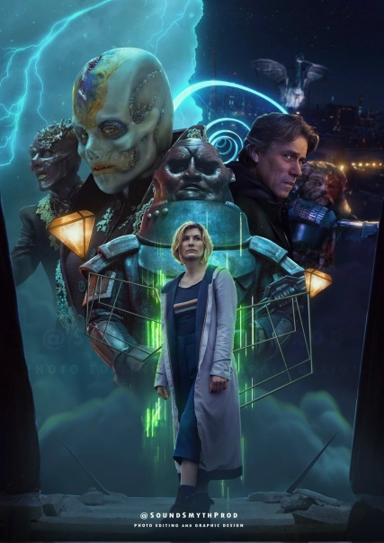

Эра Тринадцатого Доктора (13 сезон)
<<< НАЗАД ||| 2. Глава вторая: Война сонтаранцев ||| ДАЛЬШЕ >>>
MVO [TVShows], [Кириллица], [Baibako], [ColdFilm], DVO [KerobTV] или Original [ENG]
Субтитры: Русские {TrueTransLate} или Английские
 | Весь 13-й сезон (6 серий) |
Chapter Two: War of the Sontarans
Дата выхода: 7 ноября 2021
Формат: 60-минутный эпизод
| Варианты озвучек: | * Разные: смотрите по инструкции |
|---|---|
| Скачивание и просмотр: |
Доктор неожиданно сталкивается с одним из своих самых опаснейших врагов — сонтаранцы ввязываются в Крымскую войну. Пока британская армия даёт решительный бой воинственным пришельцам, Доктору и её спутникам придётся прибегнуть к помощи знаменитой медсестры Мэри Сикол и раскрыть загадочные тайны древнего храма.


Трейлер:
https://youtu.be/SH-nUi0xDwc